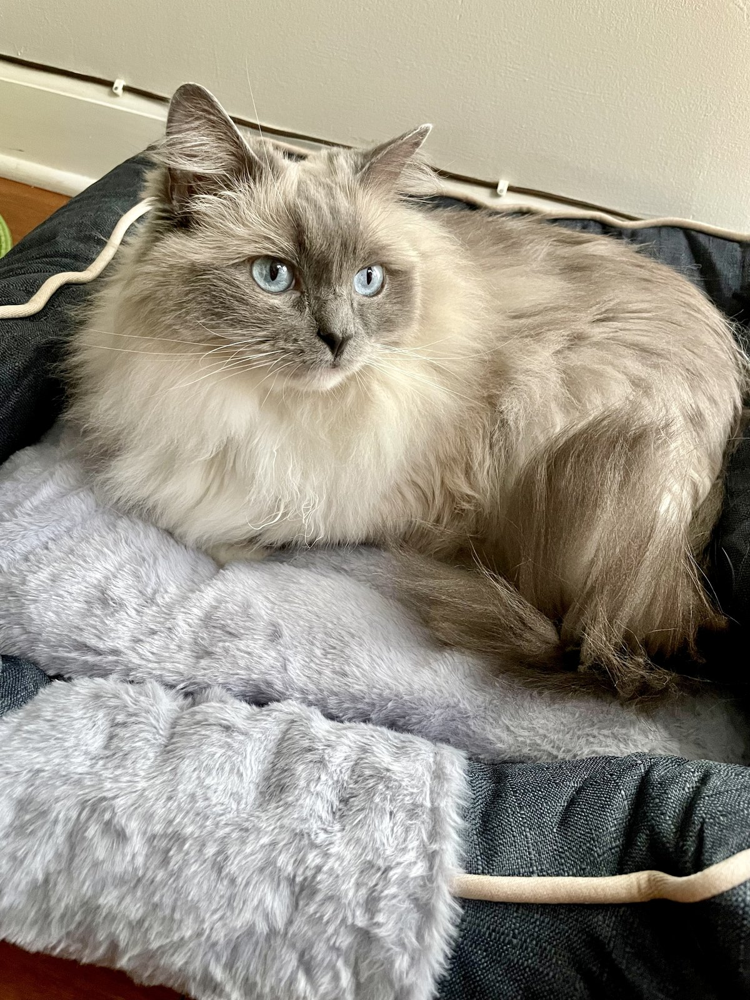

Beyond Mathematics
Outside mathematics, I enjoy biking and playing table tennis, although I’m still new to the game. I also enjoy making pour-over coffee.
Meet Shiloh
We have a Ragdoll cat called Shiloh.

Outside mathematics, I enjoy biking and playing table tennis, although I’m still new to the game. I also enjoy making pour-over coffee.
We have a Ragdoll cat called Shiloh.
